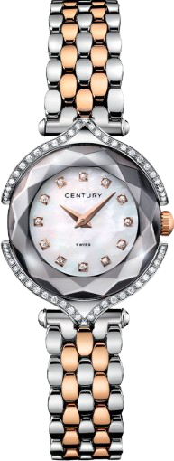

Часы Century Affinity 632.7.S.12.14.RSK
Краткое описание товара
Женские швейцарские часы Century Affinity 632.7.S.12.14.RSK
499 990 руб.
Характеристики товара
- Пол: Женские
- Материал корпуса: Сапфир
- Материал ремешка/браслета: Сталь
- Доп. материал корпуса: Сталь
- Механизм: Механический с автоподзаводом
- Стекло: Сапфировое
- Водозащита (м): 50
- Размер корпуса (подробно: 42мм
- Толщина корпуса: 10мм
- Страна (владелец): Швейцария
- Гарантия: 2 года от производителя
Подробное описание товара
Швейцарские часы Century Affinity 632.7.S.12.14.RSK с уникальным корпусом из сапфира - второго по твердости после алмаза материала в мире. Благодаря фирменной, исключительно сложной, технологии Megalith два сапфировых диска сращиваются в одну монолитную деталь. Сапфир CENTURY - прозрачный и идеально чистый материал позволяет придавать часам форму в соответствии с невероятной фантазией дизайнеров. Мастера компании высекают и полируют каждую грань корпусов исключительно вручную, благодаря чему достигается ослепительная игры света и красок. Дополнительные элементы корпуса выполнены из золота или нержавеющей стали и украшены бриллиантами.
Технические характеристики
| Механизм | Швейцарский кварцевый механизм с высокой надежностью и точностью хода, работает от заменяемого элемента питания - батарейки. Центральные часовая и минутная стрелки. |
| Корпус | Корпус круглой формы выполнен из сапфира CENTURY с 36 гранями ручной работы. Задняя крышка и система крепления браслета из нержавеющей стали марки 316L. Диаметр корпуса модели Century Affinity 632.7.S.12.14.RSK составляет 26,2 мм. Корпус и циферблат украшены 66 бриллиантами, общим весом 0,24 карата. Переводная коронка из красного золота. Задняя крышка крепится к корпусу при помощи винтов. Водостойкость 100 метров (10 АТМ). |
| Стекло | Сапфировое стекло имеет повышенную устойчивость к возникновению царапин. |
| Циферблат | Циферблат из белого перламутра, драгоценные камни в качестве часовых меток, граненые стрелки “меч” с покрытием родием. |
| Браслет | Модель Century Affinity 632.7.S.12.14.RSK на браслете из красного золота 18К и высококачественной стали с 5 рядами литых звеньев. Браслетная застежка “бабочка”, раскладывающаяся при нажатии на кнопки системы двойной блокировки. |